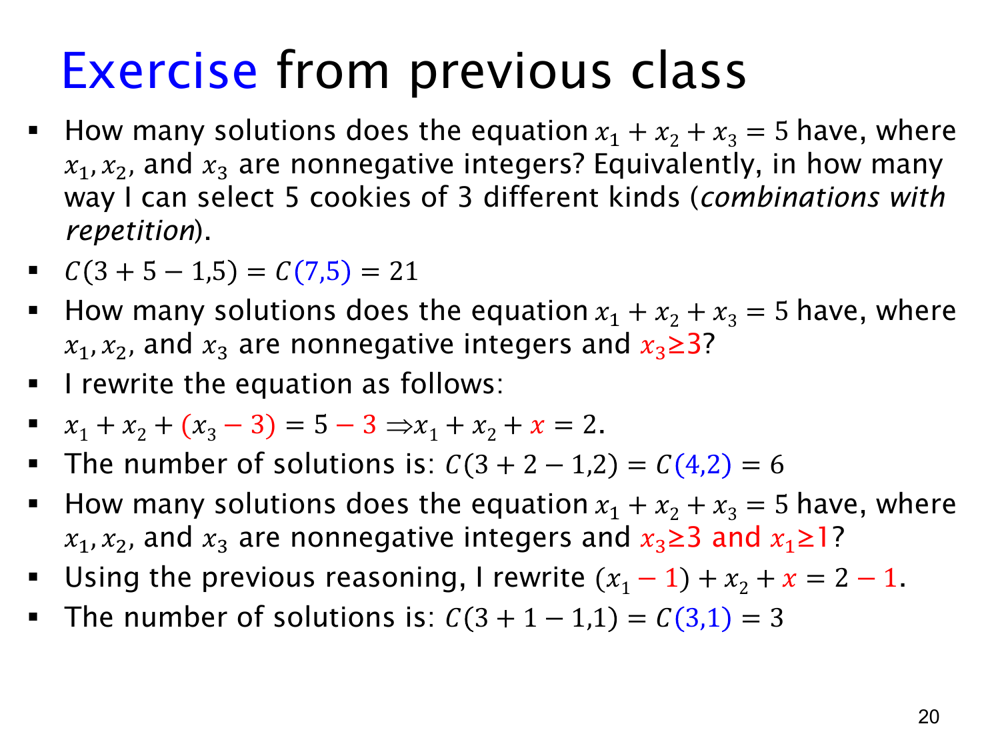

L1.8 · 第 19 页讲解原文
查看这一页课件

非负整数解：有下界时先平移变量
这一页复习 stars and bars（星与隔板法）以及带下界的变量替换。方程
x1+x2+x3=5,x1,x2,x3≥0
可以理解成从三种饼干中选 5 块：xi 记录第 i 种选了多少块，同一种内部不区分个体，选择的先后顺序不计。
用 5 颗星代表饼干，2 块隔板分成三段，每段星的数量就是对应的 xi。共有 7 个符号位置，因此
(57)=(27)=21
个非负整数解。允许相邻隔板或首尾隔板，正好对应某个变量为 0。
如果要求 x3≥3，先给第三类预留 3 块，设
y3=x3−3≥0.
原方程等价于
x1+x2+y3=2.
仍是 3 个非负变量，只是可自由分配的总量从 5 降到 2，因此有
(3−12+3−1)=(24)=6
个解。这个替换是一一对应：知道新解后，加回预留的 3 就唯一恢复原解。
如果再加条件 x1≥1，令 y1=x1−1，则
y1+x2+y3=1,
所以有 (23)=3 个解。对应原解恰好是
(2,0,3),(1,1,3),(1,0,4).
一般地，若 x1+⋯+xk=N 且 xi≥ai，设 yi=xi−ai，剩余总量为 M=N−∑ai。当 M≥0 时，解数是 (k−1M+k−1)；当 M<0 时，最低需求已超过总量，解数为 0。
下界可以直接预留并平移；上界则通常要先数所有非负解，再用容斥排除超限的情况。